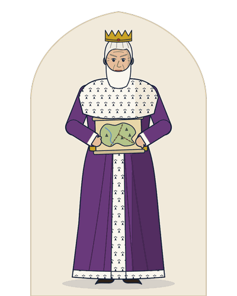
King Lear
An old king, over eighty. He gives his kingdom to the two daughters who flatter him, is driven out by them, goes mad in the storm and dies with Cordelia in his arms.
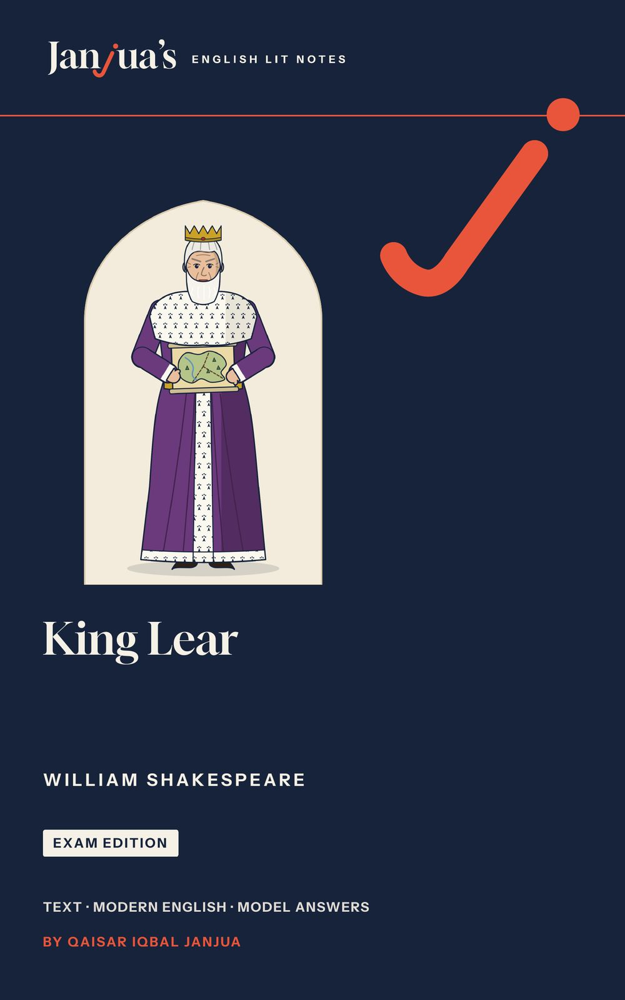
King Lear is William Shakespeare’s tragedy of an old king who gives his kingdom to the two daughters who flatter him, disowns Cordelia, the one who tells him the truth, and goes mad in a storm. This King Lear study guide gives you the complete play with a plain modern English line under every line of verse, the meaning of every prose speech, a unit for every scene or group of scenes, and the answers examiners look for.
The book is being prepared for Amazon now. Send one short email and you will hear as soon as it is out.
Email me when it is outThis opens your email app with a short message to qaisar@janjuaslitnotes.com already written: just press Send. Your email address is used only to tell you when this book is out. How your email is used.
King Lear is a tragedy in five acts: an old king divides his kingdom among his daughters, is shut out by the two who flatter him, goes mad in a storm, and dies with the body of Cordelia, his youngest daughter, in his arms. A second plot, the story of Gloucester and his sons, runs beside his. Here is the whole play act by act, as the book sums it up.
Lear, the king, is old and wants to give up his power. He divides the kingdom among his three daughters and asks which of them loves him most. Goneril and Regan flatter him. Cordelia, the youngest, will not: “Nothing, my lord.” (1.1.85). Lear disowns her, and banishes Kent when he defends her. Burgundy will not take her without a dowry, but the King of France marries her. Edmund, the illegitimate son of the Earl of Gloucester, forges a letter to make his father believe that Edgar, the elder and legitimate son, plans to kill him. Lear stays with Goneril, who orders her servants to slight him and demands that he cut his train of a hundred knights. Kent returns in disguise to serve him, and the Fool mocks Lear’s folly. Lear curses Goneril and leaves for Regan’s: “O, let me not be mad, not mad, sweet heaven!” (1.5.43).
Edmund pretends that Edgar has attacked him, and Edgar flees. Cornwall and Regan arrive and take Edmund into their service. Kent beats Oswald, Goneril’s steward, and Cornwall puts him in the stocks. Edgar disguises himself as Poor Tom, a mad beggar. Lear finds his messenger in the stocks. Goneril arrives, and the two sisters cut his knights to none. “O, reason not the need” (2.4.261), he cries, and goes out into the storm. The doors are shut behind him.
On the heath Lear rages at the storm, with only the Fool beside him. Kent leads them to a hovel, where they find Poor Tom. Gloucester tells Edmund that he will help the king, and Edmund betrays him to Cornwall. In a farmhouse Lear holds a mock trial of his daughters; then Gloucester sends him to Dover, where Cordelia has landed with a French army. Cornwall puts out Gloucester’s eyes while Regan urges him on. A servant wounds Cornwall and is killed, and Gloucester learns that Edmund betrayed him.
Blind Gloucester meets Edgar, still disguised as Poor Tom, and asks to be led to the cliff at Dover. Albany turns against Goneril, and Cornwall dies of his wound. Goneril and Regan both want Edmund. Edgar makes his father believe that he has survived a fall from the cliff. Lear, mad and crowned with weeds, meets Gloucester. Edgar kills Oswald and finds Goneril’s letter asking Edmund to kill her husband. Lear wakes in Cordelia’s care and knows her: “I am a very foolish fond old man” (4.7.60).
The British army defeats the French, and Lear and Cordelia are taken prisoner. Edmund secretly orders their deaths. Edgar, armed and unknown, defeats Edmund in single combat. Goneril poisons Regan and then kills herself. Gloucester has died offstage, of joy and grief. The dying Edmund tries too late to save Cordelia. Lear enters with her body in his arms, “Howl, howl, howl, howl!” (5.3.258), and dies. Albany, Kent and Edgar are left.
Shakespeare wrote King Lear in 1605 to 1606. It was printed in a Quarto in 1608 and again in the First Folio of 1623; the text in the book gives the passages of both. The play has five acts and 26 scenes.
15 units, one for each scene or group of scenes, then the essays and the revision. Every unit follows the same plan, so you always know where to look.
The text is the Cambridge Shakespeare, edited by William George Clark and William Aldis Wright (Volume VIII, Macmillan, 1866), with obvious misprints corrected. Every quotation and line number in the book is checked against it, and every quotation carries act, scene and line: 3.2.1 means Act 3, Scene 2, line 1.
Paperback, 6 x 9 in, 442 pages, and a Kindle ebook.
On Kindle now
Unit 7: The Storm: “Blow, Winds, and Crack Your Cheeks”, complete, with the title page, A Note from the Author and the contents.
Every line of the play’s verse has a plain modern English line under it, and the hard words are explained after the passage. This is Cordelia’s answer in the love test, as the book prints it.
“If you have opened this book, you probably have an exam coming, and a long, dark play that asks a great deal of you. King Lear can feel hard at first: a king who gives his kingdom away, two families torn apart, a storm, a madman, a Fool who speaks in riddles, and an ending that breaks the heart. None of it needs to frighten you. You need to know what is happening, why the characters act as they do, and how to write about it well.”
Cordelia will not flatter Act 1, Scene 1 · Lines 88 to 91
Nothing will come of nothing: speak again.
Nothing will come of nothing: speak again.
Unhappy that I am, I cannot heave
Unhappy as I am, I cannot lift
My heart into my mouth: I love your majesty
my heart into my mouth: I love your majesty
According to my bond; nor more nor less.
as my duty requires; no more and no less.
Words88 Nothing will come of nothing: you get nothing if you give nothing · 91 bond: the duty a child owes a parent
The book gives one unit to each scene or group of scenes: 15 units in all, from the love test to the last scene. Each line below is the book’s own summary of the scene.
Lear gives his kingdom to the daughters who flatter him. He disowns Cordelia, who will not, and banishes Kent, who defends her.
Edmund, Gloucester’s illegitimate son, makes Nature his goddess. A false letter turns his father against Edgar.
Goneril plans a quarrel. Kent returns in disguise, the Fool speaks truth, and Lear curses Goneril and leaves.
Lear sets out for Gloucester’s house, afraid of madness. There Edmund wounds himself and turns his father against Edgar.
Kent quarrels with Oswald and sits in the stocks. Hunted by his father, Edgar chooses to live as a mad beggar.
Lear finds Kent in the stocks. Regan and Goneril strip away his followers until he rushes out into the storm.
Lear rages at a storm on the heath, with the Fool. Kent seeks help; Gloucester plans to aid the king.
Lear prays for the poor, then meets Edgar, who plays a mad beggar, Poor Tom. Gloucester arrives with a torch.
Edmund betrays his father. In a farmhouse Lear tries his daughters in a mock trial, and the Fool speaks his last words.
Cornwall and Regan bind Gloucester and ask where he sent the King. Cornwall puts out his eyes, and a servant dies.
Blind Gloucester takes Poor Tom, his son Edgar, as guide. Albany turns on Goneril and hears that Cornwall is dead.
Kent hears how Cordelia wept for her father. She sends soldiers to find the mad King, while Regan plots with Oswald.
Edgar tricks his blind father into surviving an imaginary fall. Then the mad Lear enters, dressed in wild flowers, and speaks hard truths.
Cordelia wakes her father with music and a kiss. Lear, shaken and ashamed, asks her pardon, and she forgives him.
The British win and Lear and Cordelia are taken. Edgar defeats Edmund in single combat, but Cordelia is hanged and Lear dies over her body.
King Lear turns on two families: an old king and his three daughters, and the Earl of Gloucester and his two sons. The book has fifteen drawings in one house style; here they are with the book’s own notes on each.

An old king, over eighty. He gives his kingdom to the two daughters who flatter him, is driven out by them, goes mad in the storm and dies with Cordelia in his arms.
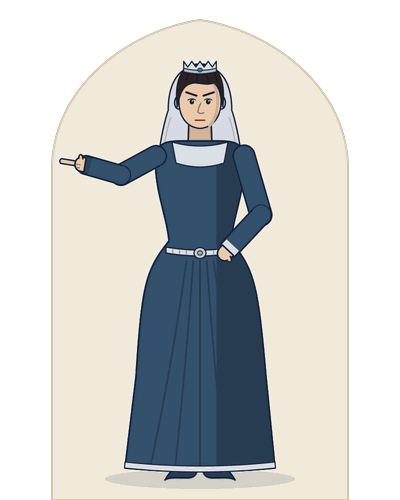
His elder daughters, married to Albany and Cornwall. They take his power, shut him out and both desire Edmund; Goneril poisons Regan and kills herself.
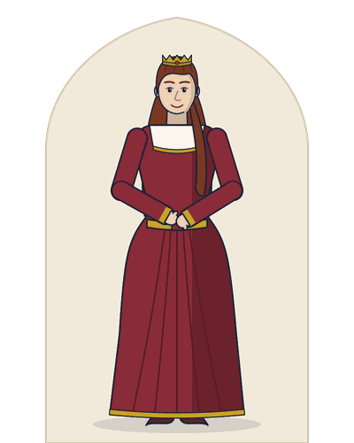
Lear finds Kent in the stocks. Regan and Goneril strip away his followers until he rushes out into the storm.
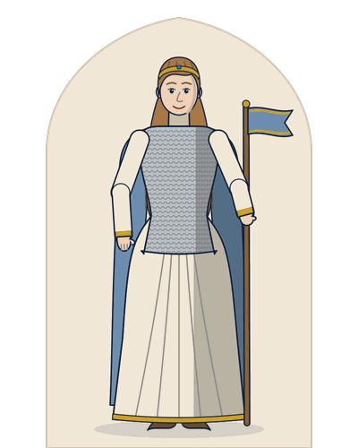
His youngest daughter, who will not flatter him. Disowned, she marries the King of France, returns with an army, forgives Lear and is hanged in prison.
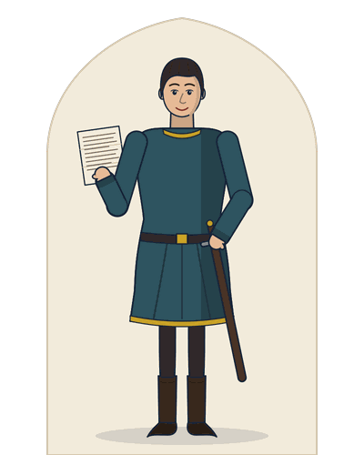
Gloucester’s illegitimate son, who plots to take his brother’s land and his father’s title.
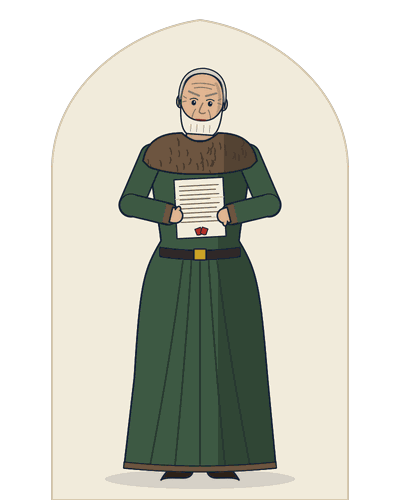
A nobleman who believes Edmund’s lies, helps the king and is blinded for it.
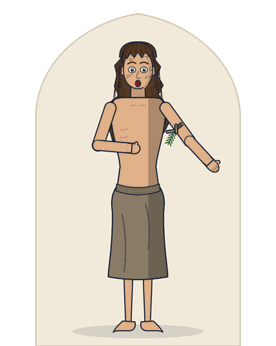
Gloucester’s elder, legitimate son. Falsely accused, he hides as Poor Tom, guides his blind father and kills Edmund in single combat.
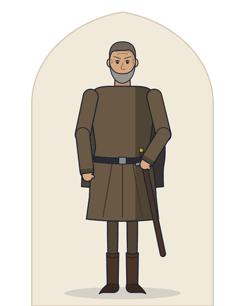
Banished for defending Cordelia, he serves Lear in disguise to the end.
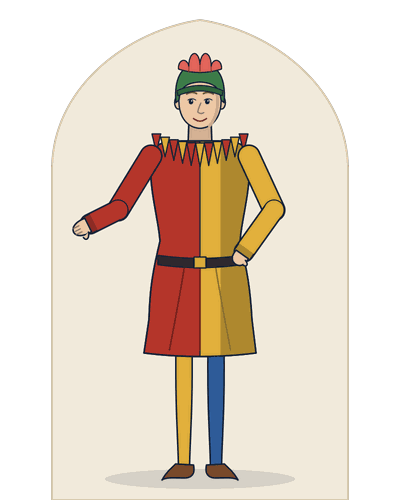
Lear’s court jester, who tells him the truth in jokes and songs, and vanishes after Act 3.
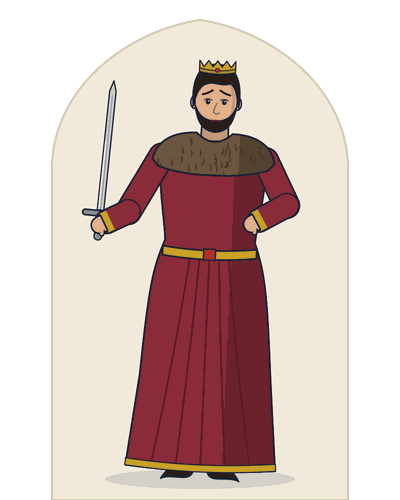
Regan’s husband, who blinds Gloucester and dies of a servant’s blow.
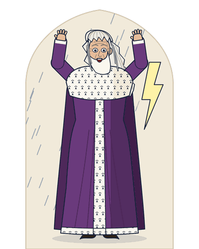
Lear rages at a storm on the heath, with the Fool. Kent seeks help; Gloucester plans to aid the king.
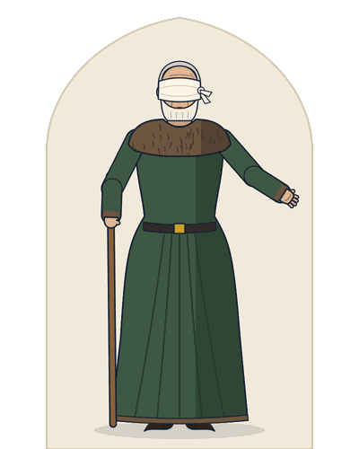
Blind Gloucester takes Poor Tom, his son Edgar, as guide. Albany turns on Goneril and hears that Cornwall is dead.
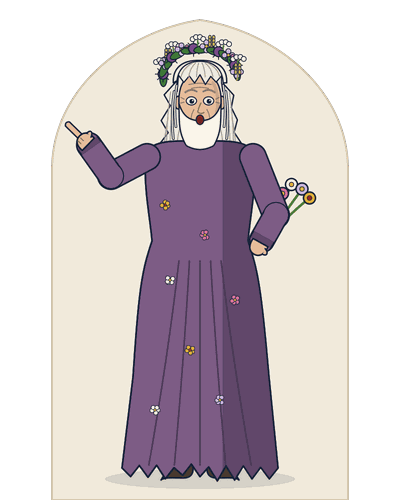
Edgar tricks his blind father into surviving an imaginary fall. Then the mad Lear enters, dressed in wild flowers, and speaks hard truths.
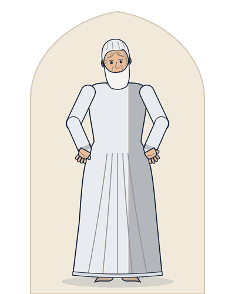
Cordelia wakes her father with music and a kiss. Lear, shaken and ashamed, asks her pardon, and she forgives him.
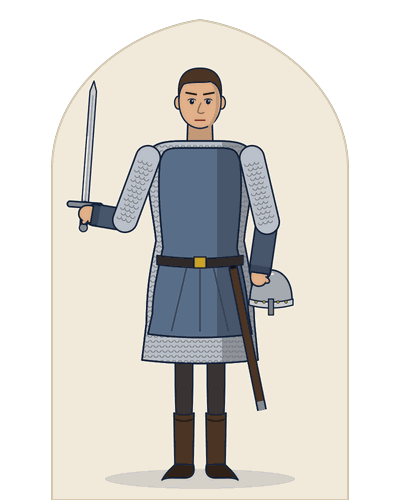
The British win and Lear and Cordelia are taken. Edgar defeats Edmund in single combat, but Cordelia is hanged and Lear dies over her body.
These are thirteen of the forty key passages in the book’s passage bank, each with its speaker, its act, scene and line in the Cambridge text, and the first thing the book says about why it matters.
| Passage | Speaker and line | Why it matters |
|---|---|---|
| “Nothing will come of nothing: speak again.” | Lear1.1.88 | Lear means that no flattery will bring no land. |
| “I cannot heave / My heart into my mouth: I love your majesty / According to my bond; nor more nor less.” | Cordelia1.1.89-91 | She will not flatter; “bond” means her duty as a daughter. |
| “Thou, nature, art my goddess; to thy law / My services are bound.” | Edmund1.2.1-2 | He follows nature as raw force, not custom or duty. |
| “How sharper than a serpent’s tooth it is / To have a thankless child! Away, away!” | Lear1.4.282-283 | He says it of Goneril, not Cordelia. |
| “O, reason not the need: our basest beggars / Are in the poorest thing superfluous:” | Lear2.4.261-262 | The daughters cut his knights from fifty to none, and Lear argues that dignity needs more than bare need. |
| “Blow, winds, and crack your cheeks! rage! blow!” | Lear3.2.1 | The storm matches the rage in his mind. |
| “I am a man / More sinn’d against than sinning.” | Lear3.2.59-60 | He sees himself as wronged, yet he has just spoken of hidden “close pent-up guilts” (3.2.57). |
| “unaccommodated man is no more / but such a poor, bare, forked animal as thou art.” | Lear3.4.104-105 | Lear sees man stripped of clothes and comfort, and tears at his own: “Off, off, / you lendings!” (3.4.105-106). |
| “Lest it see more, prevent it. Out, vile jelly! / Where is thy lustre now?” | Cornwall3.7.82-83 | This is the climax of the play’s images of sight. |
| “As flies to wanton boys, are we to the gods; / They kill us for their sport.” | Gloucester4.1.37-38 | This is the bleakest view of the gods in the play, and Gloucester says it, not Lear. |
| “I am a very foolish fond old man,” | Lear4.7.60 | He is humble and nearly sane: “I fear I am not in my perfect mind.” (4.7.63). |
| “The gods are just, and of our pleasant vices / Make instruments to plague us:” | Edgar5.3.171-172 | This is the play’s best-known statement of justice. |
| “Never, never, never, never, never! / Pray you, undo this button: thank you, sir.” | Lear5.3.309-310 | The play does not say whose button, or who is addressed. |
The book answers the twelve questions examiners set most often on King Lear with twelve model essays. Each is written in full for long papers, with a marked cut line where a shorter answer can stop. These are the topics:
Four pages as they appear in the book: the title page, a scene card, a page of text with modern English, and a critical note. Select a page to see it larger.
Short, direct answers taken from the King Lear study guide itself.
Yes. It prints the complete play from the Cambridge Shakespeare, edited by William George Clark and William Aldis Wright (Volume VIII, Macmillan, 1866), in 15 units, one for each scene or group of scenes. Under every line of verse there is a plain modern English line; in prose, such as the talk of Gloucester, Kent and Edmund, most of the Fool’s jokes and Poor Tom’s ravings, the modern English follows the speech as one paragraph.
Yes. Every line of verse has a plain modern English line beneath it, and every prose speech is followed by its meaning in modern English. “Unhappy that I am, I cannot heave” (1.1.89), for example, becomes “Unhappy as I am, I cannot lift”.
The book follows six themes through the play: love (love, duty and loyalty), nature (nature and the unnatural), sight (sight, blindness and insight), madness (madness, folly and wisdom), justice (justice, the gods and suffering) and power (power, authority and kingship). Every point on a scene card carries its theme tag, and the tag names the essays it serves: love leads to Essays 2, 6 and 12, nature to Essays 3, 4 and 8, sight to Essays 7 and 9, madness to Essays 5 and 10, justice to Essays 11 and 12, and power to Essays 1 and 4.
The book’s twelve model essays answer the King Lear questions examiners set most often: Lear as a tragic hero, Cordelia, Edmund, Goneril and Regan, the Fool, Edgar and Kent, the double plot, nature, sight and blindness, madness and wisdom, justice, the gods and suffering, and the ending and Cordelia’s death. The book marks five of them “Frequently set”: Lear as a tragic hero, Cordelia, Goneril and Regan, Edgar and Kent, and the double plot. Each essay is written in full for long papers, with a marked cut line where a shorter answer can stop.
Edgar kills Oswald and defeats Edmund in single combat, and Edmund dies offstage. Goneril poisons Regan and kills herself with a knife. Cordelia is hanged in prison on Edmund’s order, and Lear kills the man who hanged her. Earlier, Cornwall puts out both of Gloucester’s eyes, a servant wounds Cornwall, and Regan stabs the servant; Cornwall dies of his wound. Gloucester’s heart bursts offstage, and Lear dies on stage.
Not always. The book keeps the line numbers of the Cambridge text of 1866, which numbers lines differently from some modern editions, above all in prose. That text gives the passages of both early printings, the Quarto of 1608 and the Folio of 1623, so it has some lines, such as the mock trial in Act 3, Scene 6, that one printing leaves out. Examiners name passages by act and scene, so know each passage by its sense as well as by its number.
Only in part, the book argues. “I am a man / More sinn’d against than sinning” (3.2.59-60) is Lear’s own claim in the storm, not a fact the play proves: his daughters are cruel, but his own cruelty to Cordelia and Kent (1.1.155, 1.1.232-233) came first. Unit 7 gives both readings of the line: one hears self-pity, since Lear forgets his wrong to Cordelia, and the other hears the first sign that he can think of guilt beyond his own.
The free PDF sample has the title page, A Note from the Author, the contents and the whole of Unit 7: The Storm: “Blow, Winds, and Crack Your Cheeks”, as it appears in the book.